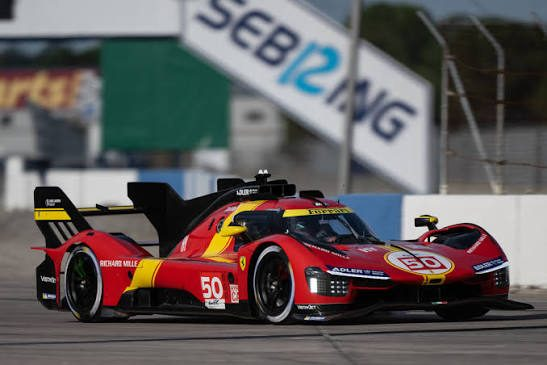
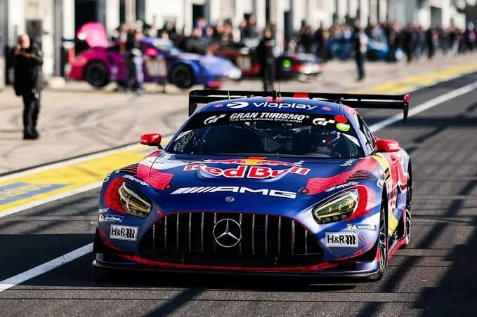

Lịch đua, kết quả và bảng xếp hạng FIA WEC bằng tiếng Việt, cho cả người mới lẫn người đã mê đua xe.
Xe #51 · Ferrari
Người chiến thắng chặng
Xe #7 · Toyota
+5.482 giây
Xe #6 · Porsche
+11.907 giây
Số liệu trong bản thiết kế chỉ mang tính minh họa.
Hai hạng xe cùng xuất phát trên một đường đua, tạo nên những pha vượt xe liên tục suốt nhiều giờ.

Xe nguyên mẫu hiệu suất cao do các hãng xe lớn phát triển, tranh chiến thắng tuyệt đối của chặng đua.
Tìm hiểu thêm
Xe GT dựa trên xe thương mại, gần gũi với xe đường phố và có nhiều đội đua khách hàng tham gia.
Tìm hiểu thêm